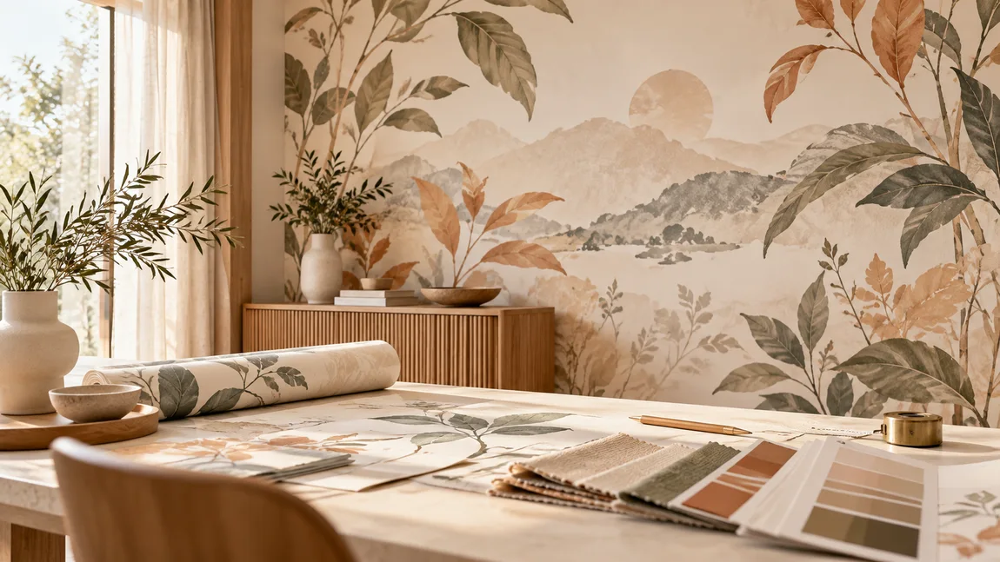

วอลเปเปอร์ภาพพิมพ์เป็นตัวเลือกสำหรับสร้างจุดเด่นของบ้าน ร้านค้า หรือพื้นที่โชว์สินค้า สามารถนำภาพวิว ลวดลาย หรือกราฟิกที่ต้องการมาปรับใช้กับผนังในรูปแบบภาพขนาดใหญ่
เลือกวัสดุพิมพ์ให้เหมาะกับงาน
วัสดุพิมพ์มีได้หลายประเภท เช่น พื้นผิวไวนิล ใยสังเคราะห์ และวัสดุอื่น ๆ ซึ่งมีผิวสัมผัสแตกต่างกัน อาจพบผิวลินิน ผิวไหม หรือผิวละเอียดแบบอื่น การเลือกชนิดวัสดุควรดูจากตัวอย่างจริงและข้อกำหนดของโรงพิมพ์ก่อนยืนยันงาน
ขั้นตอนเตรียมงานก่อนผลิต
- ตรวจสภาพผนังให้เรียบ ได้ระดับ และเหมาะกับการติดตั้ง
- ตรวจความละเอียดและสัดส่วนไฟล์ภาพ หากมีภาพของตัวเองให้เตรียมไฟล์ตามเงื่อนไขงานพิมพ์ หรือเลือกจากแคตตาล็อกที่มีให้บริการ
- วัดความกว้างและความสูงจริง พร้อมถ่ายรูปหน้างานเพื่อช่วยวางแผน
- จัดวางเลย์เอาต์บนขนาดผนัง เพื่อให้ลูกค้าตรวจภาพจำลองก่อนสั่งผลิตและเสนอราคา
- นัดหมายติดตั้ง โดยหลีกเลี่ยงช่วงที่มีงานเจาะ ขัด หรือฝุ่นจำนวนมากใกล้พื้นที่ติดตั้ง
ทำไมต้องดูภาพจำลองก่อนพิมพ์?
ภาพตัวอย่างช่วยให้ตรวจตำแหน่งองค์ประกอบสำคัญ รอยต่อ และสัดส่วนบนผนังจริงได้ก่อนผลิต ลดความเสี่ยงที่ภาพจะถูกตัดในบริเวณที่ไม่ต้องการ
FACEWALL พร้อมช่วยให้คำแนะนำเรื่องการจัดวาง เลือกพื้นผิว และวางแผนงานติดตั้งตามรายละเอียดหน้างาน
พร้อมเปลี่ยนบรรยากาศห้องของคุณหรือยัง?
เปิดชมวัสดุและลวดลายในแคตตาล็อก หรือขอคำปรึกษาฟรีจากทีม FACEWALL
หมายเหตุ: เนื้อหานี้เรียบเรียงจากเอกสารข้อมูลเบื้องต้นของ FACEWALL และปรับถ้อยคำด้านการใช้งาน/ความปลอดภัยสำหรับเผยแพร่เป็นบทความตัวอย่าง ควรตรวจสอบรายละเอียดกับสินค้าและหน้างานจริงก่อนใช้งาน